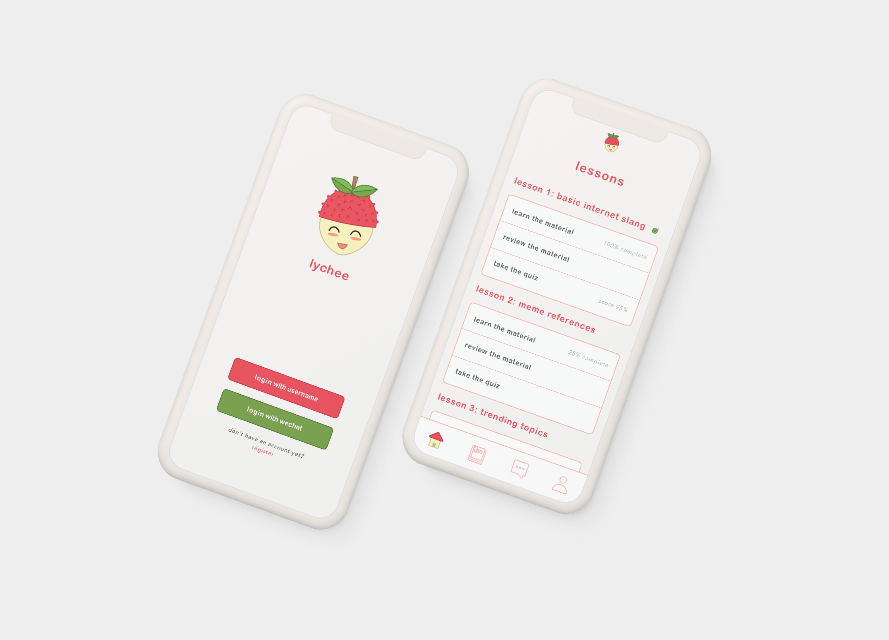

Michael Choe

02 Lychee App Prototype
Role: UI/UX Designer
Team: Michael Choe, Adrien Zheng, Samantha Chu, Christina Zhao
Lychee is an application that helps Chinese international students better understand American slang and humor. I, along with three other designers, came up with this fully functional prototype to help Chinese International students better adjust to Cornell’s campus and interact with American peers. To achieve this solution, we first discovered a core problem based on user interviews and used this qualitative data to develop prototypes, make iterations based on feedback and eventually use prototyping tools to bring it all to life.
Empathizing with Chinese International Students
We wrote out a structured interview protocol and interviewed 4 students. We gathered basic demographic information and asked them about their social experiences at Cornell. We found that:
- All have exposure to English speaking environments prior to coming to Cornell but still feel more comfortable talking to Chinese peers and using their mother tongue.
- Communication styles and mediums differ based on who they talk to; they primarily used FB Messenger to talk to Americans and WeChat to talk to fellow Chinese students.
- Cultural barriers, discrimination and clique tendencies make it more difficult for theses students to develop closer relationships with American peers.
- There are resources to help these students but they are not well promoted or inaccessible to some.
Organized Interview Insights with Affinity Diagram
The core problem is that while these students have learned English in academic settings, they are not fully comfortable using English colloquially and are not sure what to talk about with American students. After each member brainstormed 20 possible solutions, we thought the best way to address this problem would be to create an application that would help these students learn American slang, humor and pop culture references.
Looking Into Solution Space
To further develop this idea, we looked at similar, existing solutions. For example, an application, Slang, helps native Spanish speakers learn business/professional terminology in English. We also looked at products that aren't digital but target a relevant, core problem. For example, Cornell offers a Cornell-China program in which prospective students from China can immerse themselves into the US and the Cornell campus for a summer. While building off of these, to better tailor our solution we:
- Ideated ways in which students can apply what they learned on the app
- Decided to make the application mobile as our target audience often uses digital platforms for communication and learning.
Initial Design
Video of Initial Paper Prototype
To best prepare our users for casual conversations with American students, we came up with the following four key features:
- Lessons: the main focus of the application, users should be able to learn through lessons and evaluate their progress through quizzes.
- Dictionary: users should be able to refer to a convenient source for words and phrases without having to go through entire lessons.
- AI Chatting: users should be able to chat with an American student AI to apply what they learn without the stress of messing up in real life interactions.
- Account Preferences: just like in most applications, users should have the ability to edit their account information.
As shown in the video above, for our first round of user testing, we focused on creating tasks for the login/registration process, going through a lesson, looking up a word in the dictionary, chatting with an AI and adjusting user settings.
User Testing Insights
Using these tasks, we conducted user testing with four more Chinese international students. While most points were made in direct relation to tasks given, our users also gave feedback for new features. The following summarizes our insights across all tests:
Things that Worked:
- Lesson structure and flow is intuitive and effective.
- Searching words in dictionary is super easy; moreover, favorite words feature makes memorizing more commonly used words easier.
- Login process is very easy and quick
Things to Improve On:
- Locking lessons prevents users from skipping material that they already know.
- Registration could be simplified (suggested connecting to existing social media account).
- System language can only be changed in app, not during onboarding.
- Icons in navigation bar aren’t super clear (folder and magnifying glass especially).
Making Improvements Part 1: Onboarding
Since a significant majority of our target audience uses WeChat, we decided it would be helpful to allow users to either login with a username or WeChat account. When clicking WeChat, users will be given to option to continue with login or register with WeChat if they do not have a preexisting accounted linked. Furthermore, we added “go back” buttons in both login sequences to improve error recovery.
In addition, we added an option to take a placement test during the registration process so more advanced users can start learning at a suitable level. Placement test is accessible in both onboarding sequences (right after registration completes).
Making Improvements Part 2: Chatting
Users thought that talking to an AI could be awkward so we designed an option to talk with either a real user or AI. The entry point for both are represented by separate buttons found on the main messaging page. Next to the chat participant’s name is (AI) or (User) to visually differentiate the two.
Making Improvements Part 3: English/Chinese Translation
Users expressed frustration because the system language could only be changed after onboarding. In retrospect, our target audience is fluent in English but only needs help learning English slang and humor. Thus, understanding directions and application features in English should not be a problem, rendering the system language feature redundant. Instead, we thought that offering Chinese translations of English slang could help users learn more efficiently. Offering explanations of English slang with only English eliminates opportunity for users to better grasp the context and diction of a certain slang or phrase.
As shown below, we implemented translations in both the dictionary and lesson pages since these are the two places in which users are learning.
Making Improvements Part 4: Navigation Icons
In the low fidelity prototype, a book represented the lessons page and a magnifying glass represented the dictionary page. This confused a lot of users since they assumed the book was the dictionary and the magnifying glass afforded some sort of search engine. Therefore, when refining our design, we decided to represent the lessons page with a home icon and represent the dictionary page with a book. Since the lessons page is the home/landing page, these new icons make navigation more literal and clearer.
Final Prototype and Conclusion
**Note: This is a static Sketch prototype (not web). Given the limitations, when going through the prototype, you may notice that some things like dictionary recent search or percent progress in a certain lesson don't update even though they technically should. This prototype isn't fully functional and simply serves to visually represent our design decisions.
Through this project, my teammates and I were able to own a UX project from ideation to creation. While I was always confident in my visual design/UI abilities, I was not the best at interviewing people without bias and extrapolating solutions out of a pool of data. Throughout this UX process, I was able to really refine my research skills and develop a more open mind towards possible solution spaces.
Unfortunately, due to timeline restraints we could not continue refining Lychee. However, for future consideration, I wonder if lessons should be organized by levels or if they should just all be unlocked from the beginning. Our current method makes the learning experience similar to language learning applications such as DuoLingo. However, it is arguable that Lychee’s lessons do not increase with difficulty. While lesson design and planning was out of the scope for this project, it would be interesting to see how it would influence the overall UX of the application.